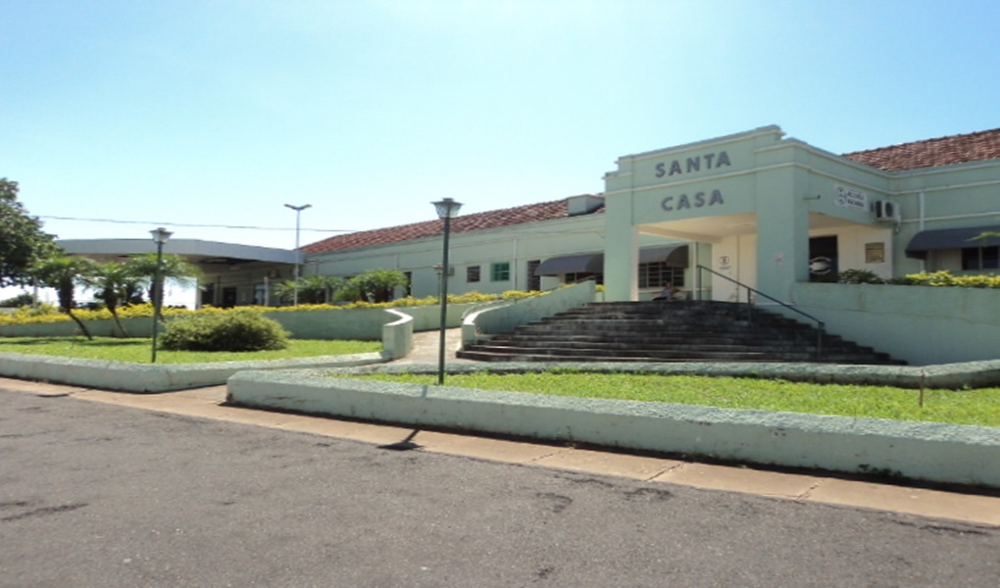
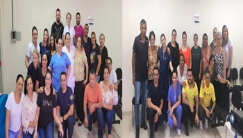

REFORMA INTERNA DA SANTA CASA – 3ª ETAPA
A 3ª etapa realizada na ala de internação SUS...
Leia mais

TREINAMENTO EM URGÊNCIAS E EMERGÊNCIAS TRAUMÁTICAS
Nos últimos dias 26 e 27 de Outubro, aconteceu na Santa Casa...
Leia mais
TREINAMENTO COM A EQUIPE DE ENFERMAGEM
Nesta Quarta Feira 28/03, foi realizado junto à equipe de enfermagem...
Leia mais